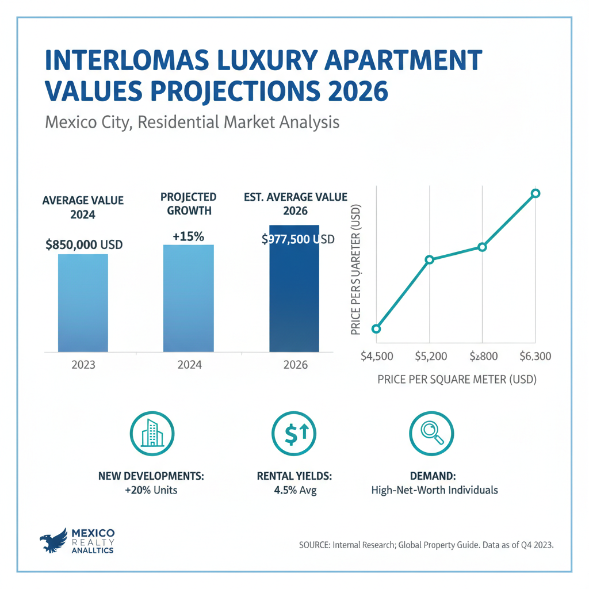

Architectural Guide 2026
Interlomas: Architectural Precision for the Discerning Visionary
On the western periphery of the Mexico City metropolitan area lies Interlomas, a nexus for ultra-high-net-worth individuals, expatriate executives, and sophisticated international capital. We navigate its complex regulatory landscape, infrastructural nuances, and unique capital appreciation models to transform your vision into an enduring asset for 2026 and beyond.
The Resident Architect's View
From my Condesa studio, I often consider Interlomas. It’s not about the historic patina of my neighborhood, but the sheer ambition and scale. I imagine the vast, unobstructed panoramas stretching out at dusk, a quietude unknown here, broken only by the hum of perfectly integrated smart home systems. There’s a particular light that hits the glass towers and meticulously landscaped ravines at 5 PM, a golden hour that reveals a different kind of luxury—one built on deliberate design and absolute privacy, far from the city's ceaseless thrum. It's an engineer's dream, a canvas for modern expression where only precision reigns.

Erik Martínez, AIA
Principal Architect. Former SHoP Architects NYC. Bringing international precision to CDMX's most complex heritage assets.
Iconic Landmarks
- Paseo Interlomas (Premium Commercial Hub)
- Bosque Real Golf Club (Adjacent)
- The Interlomas Aqueduct (Symbolic Infrastructure)
Beyond the Horizon: The Interlomas Proposition
Interlomas, a late 20th-century marvel carved from the undulating hills of Huixquilucan, represents a distinct proposition within the Mexico City metropolitan area. Unlike the historic boroughs, Interlomas was conceived as a master-planned enclave for an affluent demographic, attracting a steady influx of international capital and expatriate talent driven by burgeoning North American nearshoring. As we move into 2026, its market thrives on stable, long-term appreciation, particularly for 'lifestyle' properties that cater to a discerning rental market insulated from domestic mortgage rate volatility.
The Huixquilucan Distinction: A Modern Canvas
Crucially, Interlomas operates under the exclusive jurisdiction of the municipality of Huixquilucan, State of Mexico, not Mexico City's SEDUVI. Your architectural ambitions are guided by the highly specific Plan Municipal de Desarrollo Urbano (PMDU). This framework champions high-density mixed-use nodes and secure, master-planned residential macro-lots and Conjuntos Urbanos. New projects often necessitate an Aportación al espacio público—a mandatory financial or land contribution—for local infrastructure upgrades, ensuring that new development directly supports the community's ongoing evolution.
Seismic Serenity: Building on Zone I Firm Ground
While much of Mexico City grapples with the complexities of building on a former lakebed, Interlomas offers an unequivocal geological advantage. It is situated entirely within Seismic Zone I (Firm Ground), characterized by solid rock, compact volcanic tuffs, and dense sands. This means significantly lower seismic amplification and shorter durations of ground shaking during an event, dramatically reducing the inherent risks and foundational engineering costs associated with projects in central CDMX's problematic Zone III.
For our clients, this translates to structural peace of mind and optimized capital expenditure. We bridge the gap between rigorous US NCARB/AIA engineering standards and local practices, deploying sophisticated structural methodologies that capitalize on this stable subsoil. Our transparent, cost-plus percentage model ensures that the significant labor arbitrage—where skilled Mexican workers command approximately $8.22 USD/hour compared to $23+ USD in the U.S.—directly benefits your investment, effectively eliminating the 'Gringo Tax' often embedded in opaque, fixed-price contracts.
Freedom from History: Private Aesthetic Governance
Unlike the historic core of Mexico City, Interlomas operates in a historical vacuum. There are zero INAH-cataloged colonial streets or federal heritage constraints from INAH or INBAL within its primary residential and commercial zones. This absence grants unparalleled freedom for deploying cutting-edge, ultra-modern architectural techniques and aggressive structural designs that would be legally impossible in historically protected neighborhoods.
However, this freedom is balanced by a robust system of private governance. The vast majority of premium properties reside within exclusive gated communities or macro-lots, overseen by strict Homeowner Associations (HOAs) or Comités de Arquitectura. These committees enforce highly detailed bylaws on everything from materiality and color palettes (often mandating natural stone or high-end masonry, while prohibiting primary colors or stark white) to exterior lighting parameters and complex landscape ratios. Designs that deviate from these established, conservative luxury aesthetics will be unequivocally blocked, regardless of municipal approval.
Engineering Water Autonomy: The Cistern Imperative
Water security is a critical, systemic challenge across the Mexico City metropolitan area, and Interlomas is no exception. Reliant on the strained Sistema Cutzamala, municipal water rationing is an operational reality. Properties do not receive constant, pressurized municipal flow. Instead, water trickles into massive subterranean cisterns, from which it's pumped to rooftop tanks or distributed via hydropneumatic pressure pumps. For a luxury residence, immense internal cistern capacity is a mandatory engineering requirement. A two-person household needs approximately 55,000 liters for dry season autonomy, doubling to 110,000 liters for a family of four. We routinely integrate advanced water management systems, often necessitating extensive subterranean excavation in older properties, to ensure absolute autonomy and luxury usage patterns.
Architectural Feasibility: Interlomas 2026
| Project Type | Avg. Permit Time | Seismic Risk Level | Conservation Status |
|---|---|---|---|
| Aging Property Lifestyle Renovation | 12 - 18 Months | Moderate (Infrastructural Upgrades) | High ROI Potential (Rental) |
| New Ground-Up Macro-Lot Development | 18 - 36+ Months | High (PMDU, Aportaciones, HOA) | Complex, High Capital Barrier |
| Luxury Vertical Apartment Overhaul | 6 - 12 Months | Low (Internal, HOA Review) | Strategic for Rental Market |
Specialized Renovations: Beyond Aesthetics
Renovating in Interlomas is an act of proactive modernization. We don't just upgrade aesthetics; we integrate critical infrastructure. Our renovations include high-STC, asymmetric PVB laminated acoustic glazing to combat the unique topographical noise, ensuring unparalleled serenity. We mandate comprehensive heavy-duty voltage regulators, whole-house surge protectors, and UPS/solar-battery redundancies to protect sensitive smart-home systems from CFE grid instabilities, ensuring flawless digital connectivity with providers like Totalplay. This holistic approach ensures your property performs to the highest international standards.
High-End Interior Design: Seamless Luxury
Our interior philosophy for Interlomas embraces contemporary luxury, defined by expansive, light-filled spaces, premium imported finishes, and seamless integration of wellness amenities. We specialize in designing private spas, fully equipped gymnasiums, and breathtaking indoor-outdoor terraced gardens with panoramic views that capture the neighborhood's dramatic elevation. Every detail is curated to meet the demands of the ultra-high-net-worth individual, creating residences that are both sanctuaries and statements.
The Interlomas Cheat Sheet
- Best Streets Paseo Interlomas, Av. Magnocentro, Av. Jesús del Monte (Key Arteries)
- Zoning Code Variable (e.g., H, C, M, C-H as per Huixquilucan PMDU)
- Est. Cost / m² MXN 18,000 - 28,000 / m² (Luxury Finish)
- Best Coffee Terraza Roma, Maison Kayser
- Local Quirk Architectural freedom due to absence of federal heritage constraints.
The Challenge
The primary challenge in Interlomas lies in navigating the distinct regulatory framework of Huixquilucan, managing significant infrastructural demands (water, power), and adhering to the stringent aesthetic controls of private HOAs.
Permitting for a Manifestación de Construcción Tipo B o C is a multi-month, sequential review process. Furthermore, the Director Responsable de Obra (DRO) carries severe joint-and-several liability, making their selection and collaboration paramount for project success and legal compliance.
Our Solution
We specialize in developing a precise architectural strategy that fully integrates with the Huixquilucan PMDU and anticipates HOA demands from the outset. Our designs prioritize resilient infrastructure, ensuring water autonomy and power stability, while maximizing panoramic views and modern verticality.
Our network includes top-tier Notarios Públicos and highly respected DROs who streamline municipal permitting, guarantee airtight asset protection, and enforce meticulous construction oversight. This elite professional ecosystem ensures your Interlomas project is executed with transparency, precision, and legal certainty.


Planning to Buy?
Don't sign a contract before a technical audit. We offer pre-purchase structural assessments in Interlomas.
2026 Cost Report
Get our detailed breakdown of current labor and material costs for luxury residential in CDMX.
Start Your Interlomas Legacy
NYC Precision. Mexican Craft. We eliminate uncertainty for international investors.